Imagens
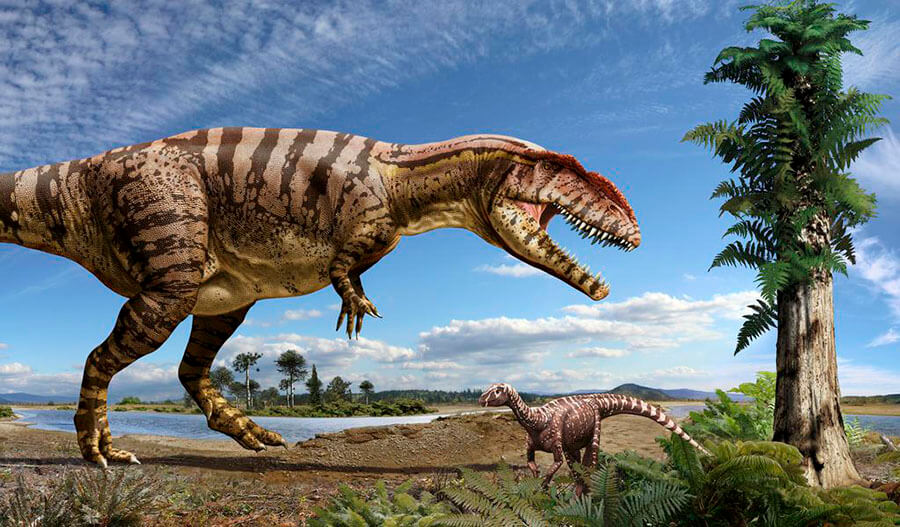 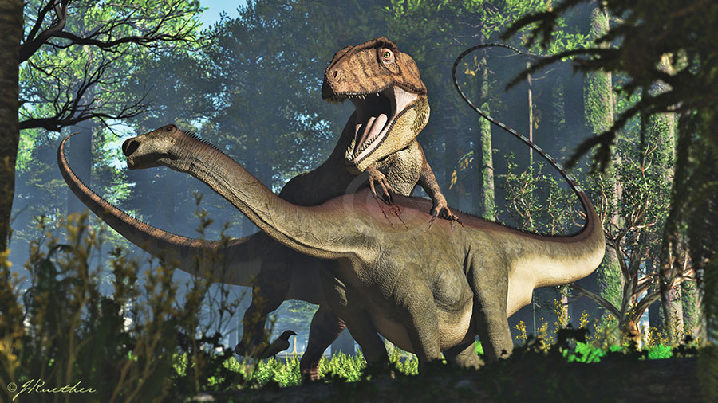
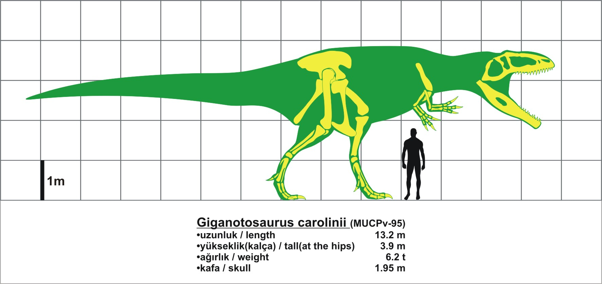
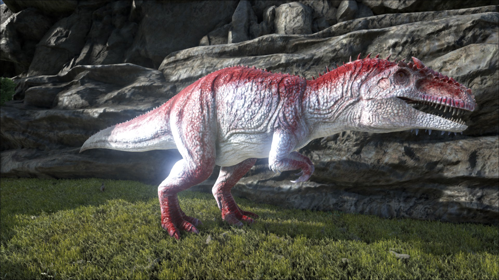
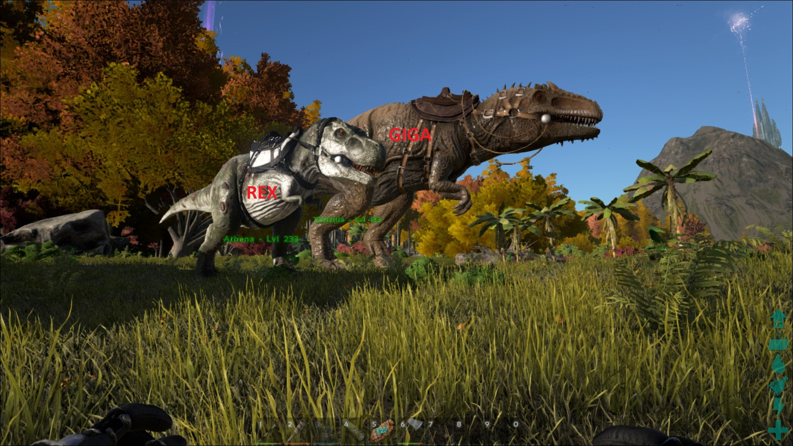
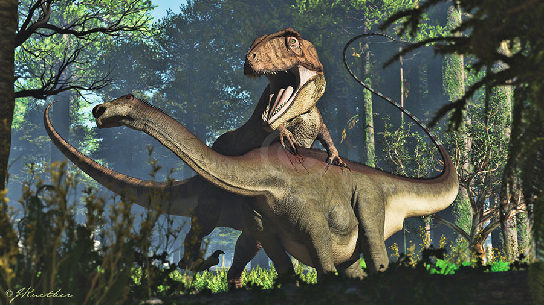
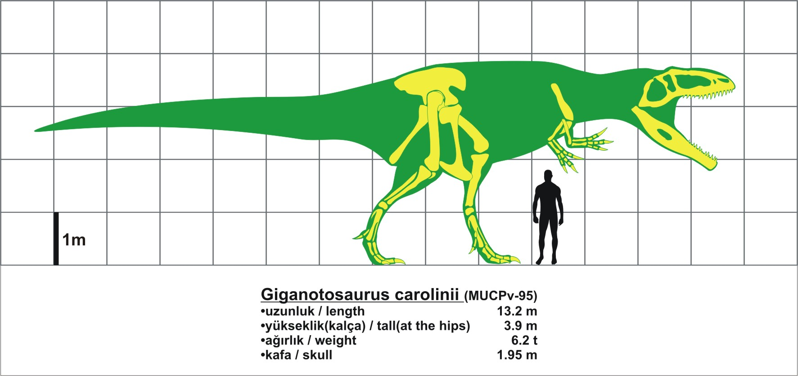
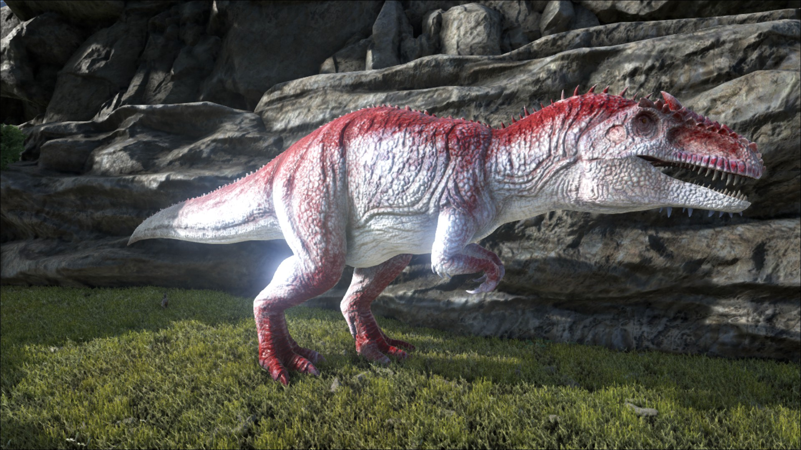
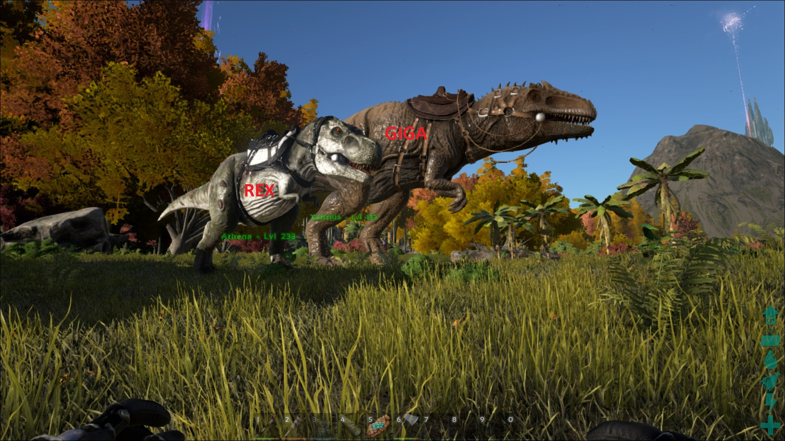
O Giganotossauro foi nomeado por Ruben Carolini, um caçador de fósseis amador que o descobriu em 1995 próximo ao Rio Limay, na Patagônia, Argentina. A descoberta foi anunciada por Rodolfo Coria e Leonardo Salgado na revista Nature em 1995. O esqueleto de um dos espécimes encontrados estava 70% completo e incluía o crânio, a pélvis, os ossos do pé e a maioria da espinha dorsal do animal. Seu tamanho é estimado em aproximadamente 4 metros de altura e algo entre 12 e 13 metros de comprimento, com a massa de um dos maiores espécimes calculada em 8,2 toneladas. Um segundo espécime, muito mais fragmentado, foi encontrado, com somente uma parte da arcada dentária que é 8% maior que o primeiro espécime. Estima-se que este segundo espécime possuía um crânio de 1,95 m, sendo 15 cm maior em relação ao primeiro (com 1,80 m de crânio).
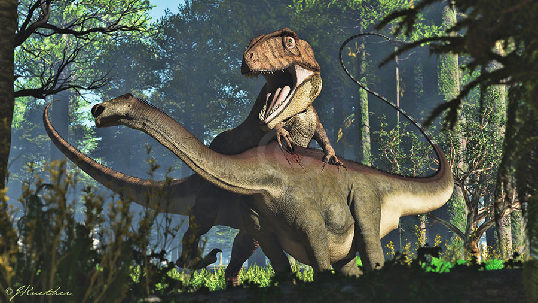
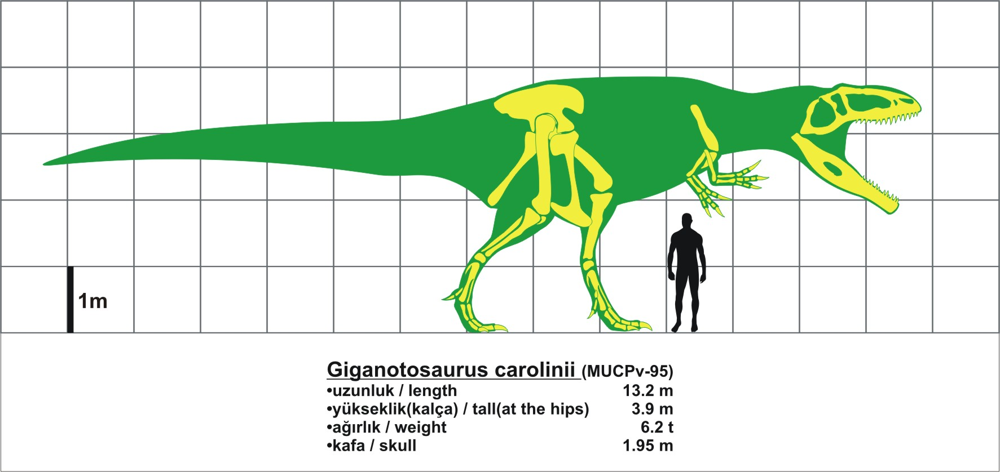
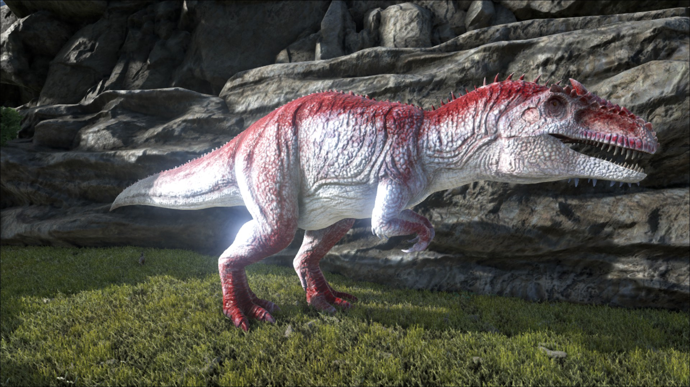
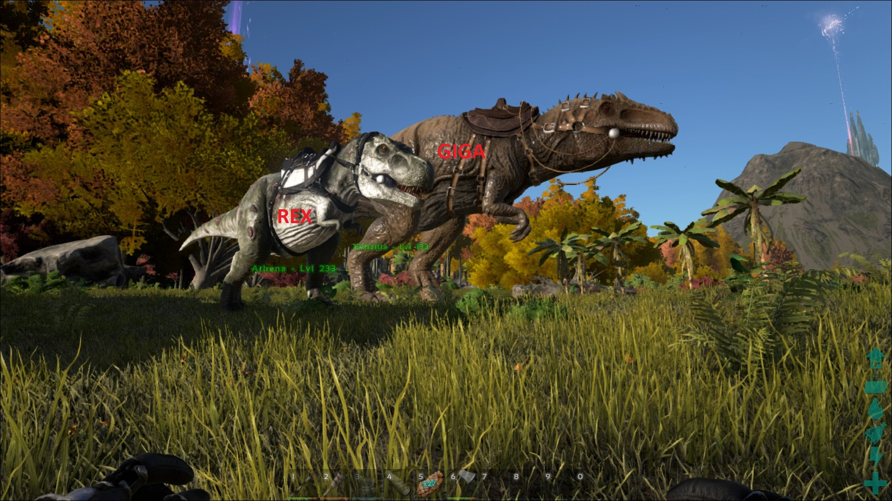
O crânio do espécime encontrado na Argentina media 1,95 metros, de perfil mais longo que o usual para terópodes de seu tamanho. Através de estudos envolvendo microscopia eletrônica e densitometria óssea , os cientistas calcularam o quanto de peso a estrutura óssea do giganotossauro poderia suportar. Seu cérebro se assemelhava a uma banana em tamanho e em formato. Acredita-se que tinha um bom olfato.